Return to Assignment 2 Overview
This is a breakdown of how I made each hybrid image:
To build the Gaussian filter, I made a 1D Gaussian with cv2.getGaussianKernel and took the outer product with its transpose, gaussian_2d = gaussian_1d @ gaussian_1d.T, to get a 2D Gaussian. For every filter I used ksize = 6σ + 1 so it covers ±3σ, which is basically the whole Gaussian.
I convolved each colour channel of one image with its Gaussian filter using signal.convolve(..., mode='same') and stacked the channels back together. This keeps only the low frequencies.
I blurred the other image with its own Gaussian filter and subtracted the blurred image from the original. This keeps only the high frequencies.
I clicked on the left and right eye in each original image with plt.ginput. I padded each filtered image so the midpoint between the eyes is in the centre, scaled down whichever image had its eyes further apart so the eye distances match, rotated the high-pass image so both eye lines have the same tilt, and cropped both images to the same size.
I added the aligned low-pass and high-pass images together and clipped the result to 0–255 to ensure all of the pixels were within the representable range.
For Derek and Nutmeg, I used the low-pass filter on Derek and the high-pass filter on Nutmeg.
I rescaled the high frequency image so that negative values are visible (which is why it looks mid-gray):
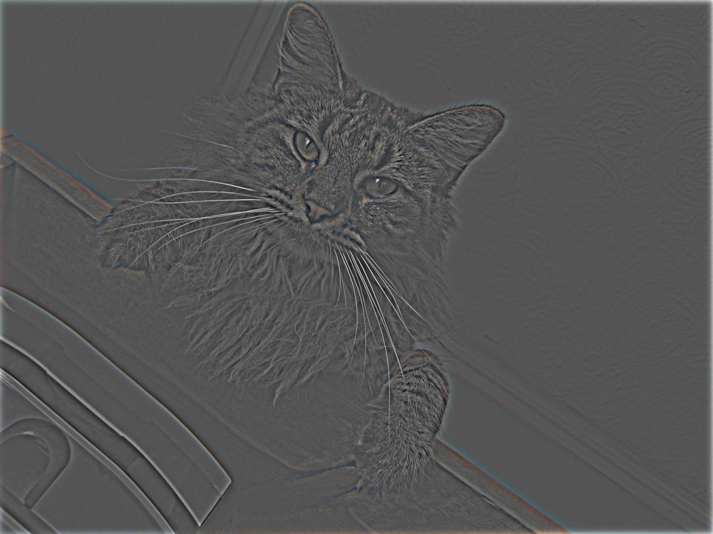
From up close you can see Nutmeg, and if you step back then from further away you see Derek.
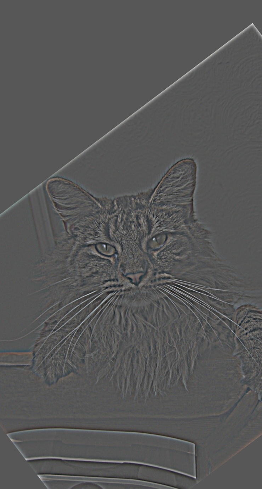
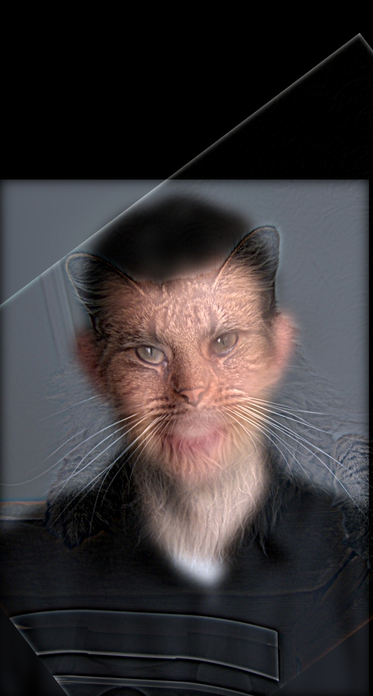
These are the log magnitudes of the Fourier transforms of the two input images, the filtered images, and the hybrid image.
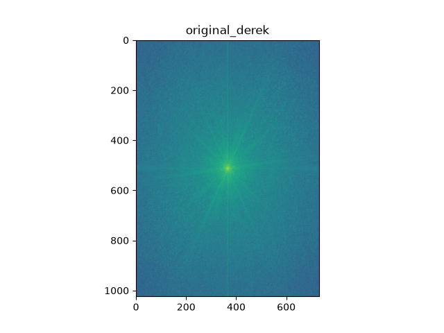
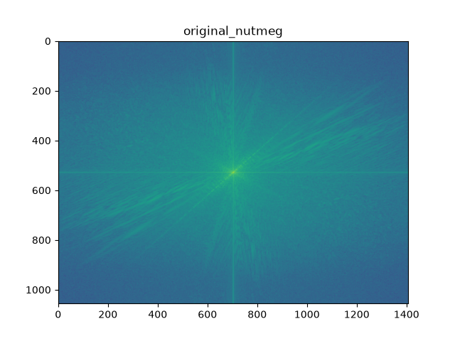
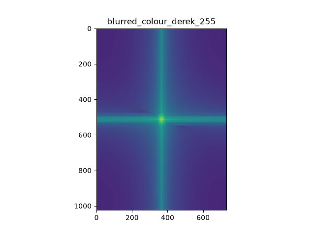
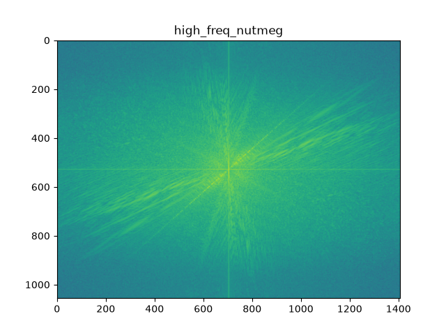
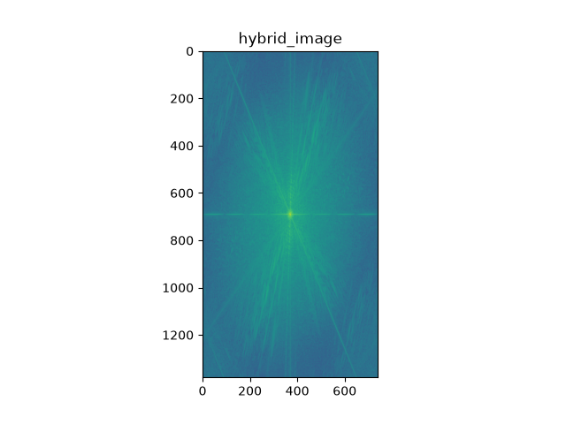
For each of the plots, the centre is the lowest frequency and frequencies get higher moving outward. In the low-pass Derek plot, most of the energy is in the centre since the low-pass removes high frequencies. The opposite happens for the high-pass Nutmeg plot where the centre is weaker and the energy is more outward since the high-pass removes low frequencies. The hybrid plot is a combination of both so it shows both the strong low-freqencies in the centre and the high frequencies outward.
I adjusted the sigma values (and subsequently the ksize values) to test whether a lower cutoff frequency (bigger sigma) or higher cutoff frequency (smaller sigma) was better for each set of images. I wanted to make sure that the amount of detail I keep from using both filters is balanced enough that the hybrid image looks appropriate. I did 5 runs where I tested 3 sigma values for each of Derek and Nutmeg.
Here are the results from each run:
| Derek sigma (low-pass) | Nutmeg sigma (high-pass) | Result |
|---|---|---|
| sigma=6 | sigma=6 | Derek's eyes, nose and mouth are still sharp up close and compete with Nutmeg. |
| sigma=12 | sigma=2 | Nutmeg is faint up close, mostly just whiskers and fur texture over a blurry Derek. |
| sigma=12 | sigma=6 | Nutmeg clearly dominates up close and Derek is recognizable from far away. |
| sigma=12 | sigma=12 | Nutmeg is very strong up close, but her stripes and edges still show through from far away. |
| sigma=20 | sigma=6 | Derek is too blurry to recognize well from far away. |
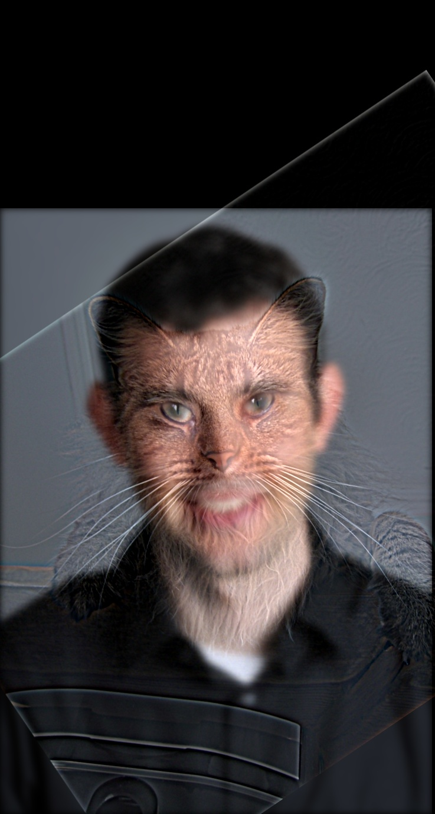
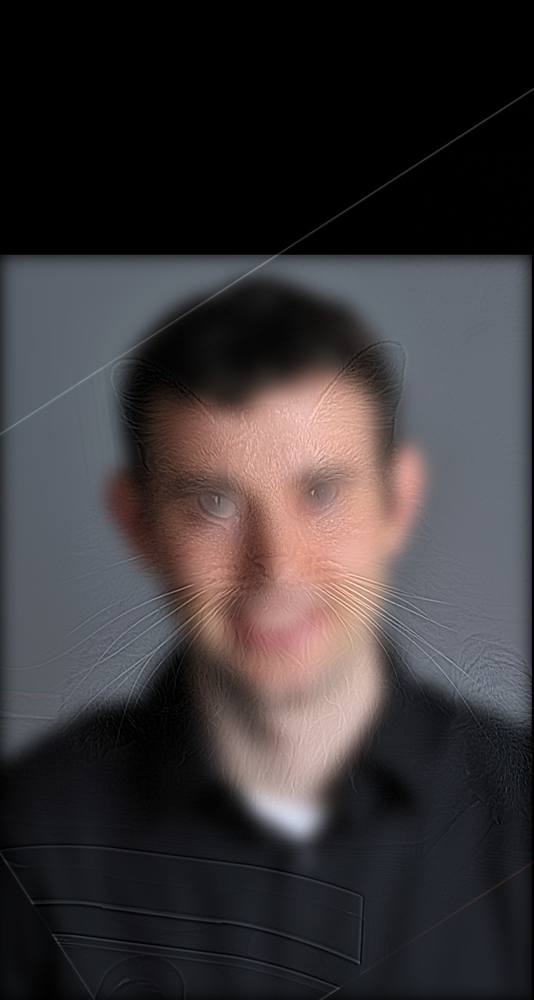
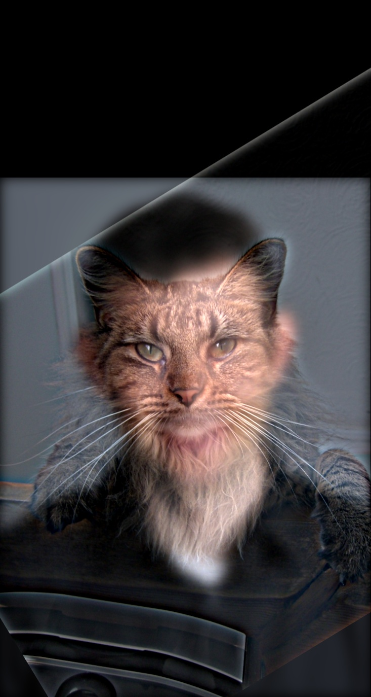
I chose sigma=12 for Derek and sigma=6 for Nutmeg because it gave the best balance.
The happy photo is the low-frequency image (sigma = 8) and the shocked photo is the high-frequency image (sigma = 3). Up close he looks shocked, with wide eyes and raised eyebrows, and from far away he looks like he's smiling.
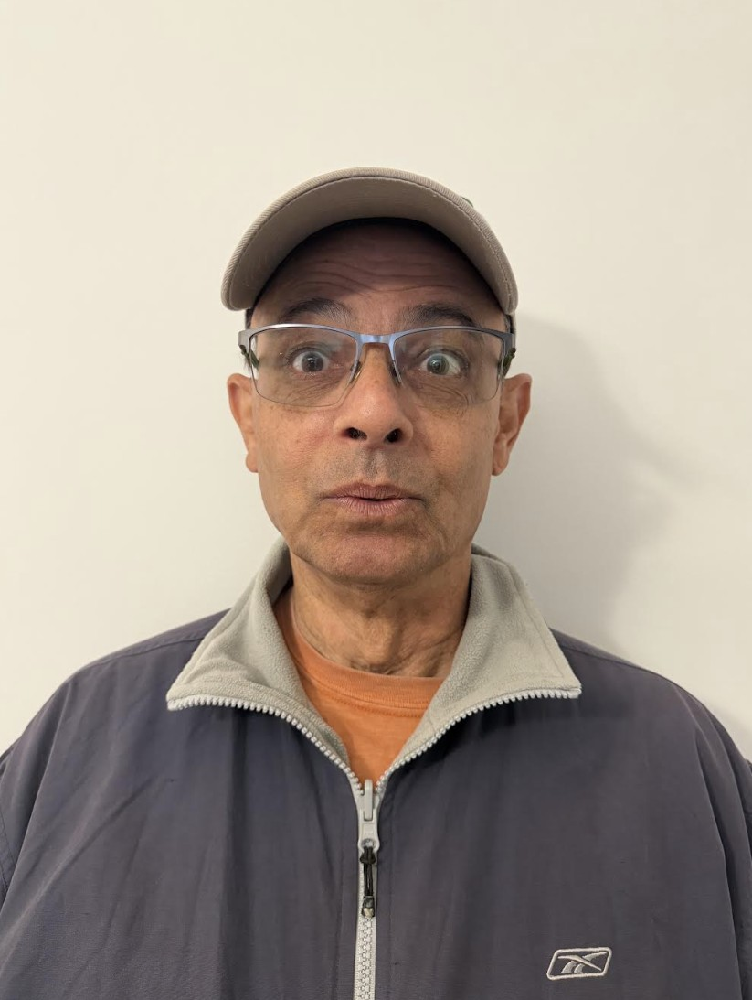
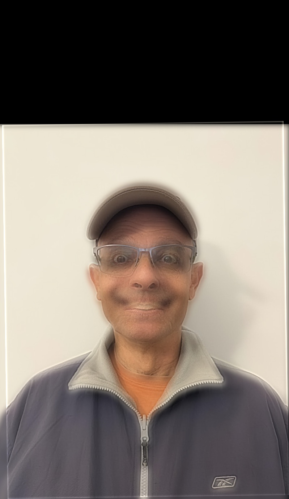
The younger photo is the low-frequency image (sigma = 5) and the older photo is the high-frequency image (sigma = 2). These photos are much smaller than the others, so I used smaller sigma values. Up close you see older Marko with his beard and curly hair, and from far away you see younger Marko.
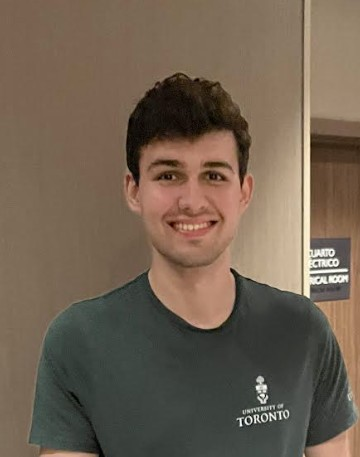
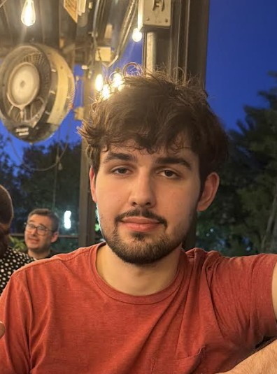
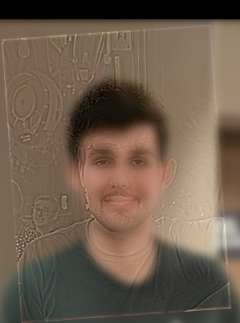
To see whether colour works better for the high-frequency component, the low-frequency component, or both, I made the Marko hybrid four times, converting the low-frequency image, the high-frequency image, both, or neither to grayscale. Sigma values stayed fixed. Here are my results:
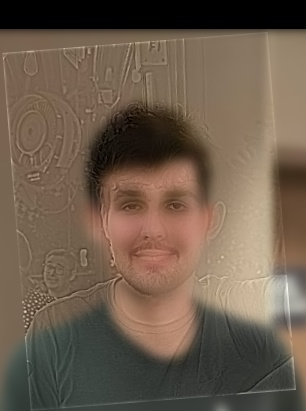
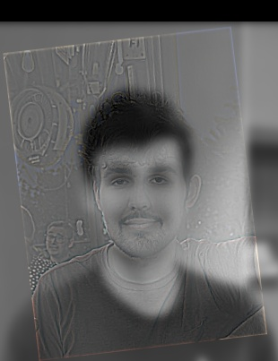
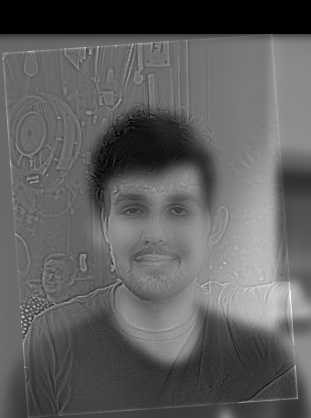
With "colour for both" and "colour for only the low frequencies" versions, the hybrid images look very similar and relatively natural, with Marko's skin tone, green shirt and the warm background. With the "colour for only the high frequencies" version, the hybrid looks almost completely grayscale and is very similar to the "no colour" version. The only colour left is faint tinting along some edges since the high-frequency image is mostly fine edges and texture and doesn't contain much colour information. I think that the best hybrid image is the "colour for the low frequencies" version since it looks natural, and it is slightly cleaner than the "colour for both" version since it removes the coloured fringes on the edges.